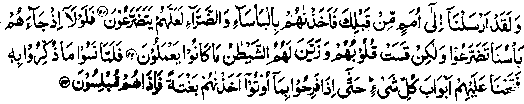

Chapter Five · Section (b): Ahadith threatening punishment for non-payment of Zakaat
4. One’s property is destroyed in consequence of withholding Zakaat
Hadith 6
Rasulullah Sallallaho alaihe wasallam has said, "No property is ever destroyed in a jungle or in a river for any other reason than the non-payment of Zakaat (on the part of its owners)".
Note: In other words, apart from the punishment in the Akhirah, prescribed for non-payment of Zakaat the evil effects of withholding it also appear in this world and it causes one’s property to be destroyed. In another version of the Hadith, a story has also been related that ‘Ubadah bin Saamit Radhiallaho anho says that once, when Rasulullah Sallallaho alaihe wasallam was sitting in the shade, at ‘al-Hateem’ in the Holy Masjid of Makkah Mukarramah, a man came and said, "O, Rasulullah the property of such and such household that was lying on the sea-shore has been destroyed". (It might have been washed away by the sea-waves). Rasulullah Sallallaho alaihe wasallam said, "No property is destroyed on land or onfr the surface of the sea (anywhere in the world) for any other reason than non-payment of the Zakaat due on it So, protect your property by paying Zakaat and treat your patients with giving away (things as) Sadaqah, and check the onslaught of sudden calamities by making supplications unto Allah Ta'ala-, for, A supplication removes an affliction that has fallen and also forestalls the impending calamities". Rasulullah Sallallaho alaihe wasallam would often say, ‘When Allah Ta'ala wills the subsistence of a people or wills that they thrive, He makes them chaste and innocent of sins and adorns them with liberality, large-heartedness and gentleness of disposition. And when He wills the extinction of a community, He causes them to betray their trust"’ and then recited the following Ayat from the Holy Qur’an:
"Even as they were rejoicing in that which they were given, We seized them unawares, and lo! they were dumb-founded". (al-An'aam:44) (Kanz)
The Ayat occurs in section (Ruku) five of Surah al-An‘aam. The two Ayaat preceding it describe a general truth about the various phases in the deterioration of a community before it is finally ruined by Allah Ta'ala, in order that other people might take admonition and learn a lesson. Allah Ta'ala says:

"We have sent Ambiya already unto peoples that were before thee, and (when they denied the Ambiya), We visited hem with tribulation and adversity (caused them to suffer from ailments and afflications), in order that they might grow humble. If only, when our disaster came on them, they had been humble! (For, then, their sin would have been forgiven and they would have been shown mercy). But their hearts were hardened and the Shaitan made all that they used to do (that they had indulged in, since long) seem fair unto them (and, therefore, they remained engrossed in the pursuits that charmed their eyes). Then, when they forgot that where-of they had been reminded, We opened unto them the gates of all things (comforts and luxuries) till, even as they were rejoicing in that which they were given, We seized them unawares and lo! they were dumbfounded." (al-An'aam: 42-44)
We should take admonition from these Ayaat. If a man is leading a life of comforts and luxuries, in spite of his acts of disobedience, then he is in a very dangerous situation. Rasulullah Sallallaho alaihe wasallam has said, "When you see Allah Ta'ala granting abundance of worldly goods to a man, in spite of his persistence in acts of disobedience, it is just a way of bringing him little by little nearer destruction (Istidraaj)". He then recited the verse:
"When they forgot that whereof they had been reminded, We opened unto them the gates of all things till, even as they were rejoicing in that which they were given, We seized them unawares and lo! they were dumbfounded”.
Abu Haazim Rahmatullah alaihe is reported to have said, "If you see that Allah Ta'ala continues to bestow His bounties upon you, in spite of your persistence in disobedience, be fearful of Allah. For, every bounty that does not bring you nearer to Allah Ta'ala is a misfortune". (Durre-Manthur). The subject will be explained further in Chapter six, under Hadith 17. Since wealth is one of the greatest bounties of Allah Ta'ala, it should be employed as a means of achieving nearness to Him'; If, instead of spending it generously for winning nearness to Allah Ta'ala, someone refuses even to pay Zakaat, which is one of the most important commandments of Allah Ta'ala, he will undoubtedly be a disobedient person and should not entertain hopes of keeping his wealth for long. For, he is himself adopting measures to destroy his property and, if his property is not destroyed in spite of his disobedience, it will be more dangerous, as it forebodes a worse misfortune. May Allah, in His infinite Mercy, save us from it